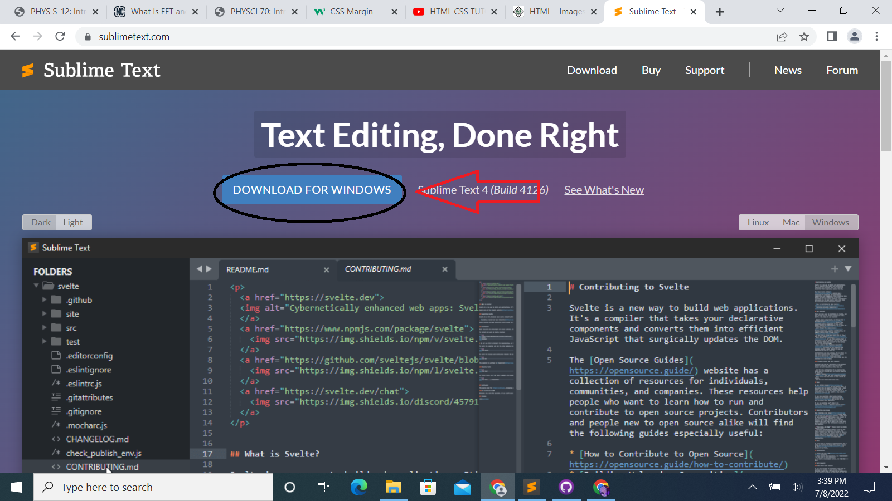
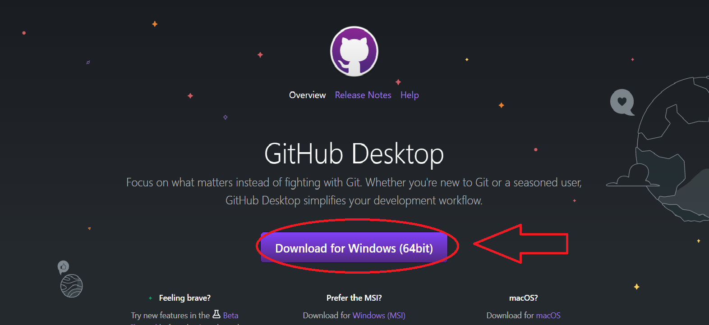

### Week 1: Introduction
For week 1, we had to working on making our website, downlading multiple applications, and coming up with a final project idea. The process of making the website is shown in the pictures below.


Once those applications were dowloaded, that's when I downloaded the template for my website, which started me off with the basics. Sublime text is where you program everything for your website, and Github is where you save these changes and updates to your website to be published to the public.
My initial final project idea is to make a pill dispenser. I want my final project to relate to my career aspiration of being a pharmaceutical engineer, and although I wish my project could do more with the process of making drugs, that's obviously very much not legal. I hope I find new ways to make my project more interesting and helpful.